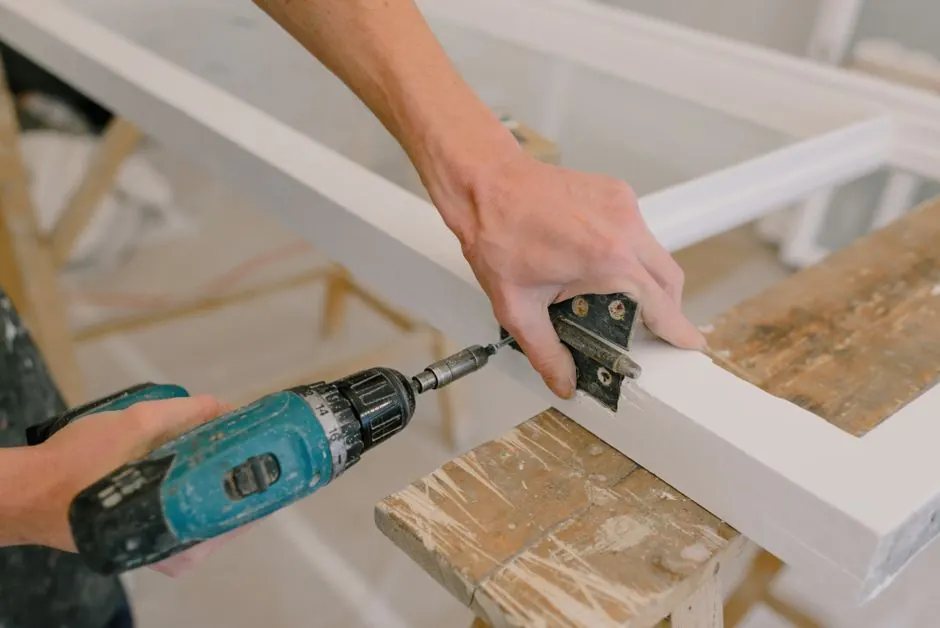

Broken locks compromising security
Our locksmiths quickly repair or replace broken locks to restore security.
Commercial Locksmith Services in California are essential for businesses needing secure access and protection. From San Diego to Sacramento, our California commercial locksmiths provide reliable services tailored for your business security needs.

Commercial Locksmith Services in California is a specialized service that provides security solutions for businesses, including lock installations, repairs, and access control systems. These services are crucial for maintaining the safety of commercial properties and ensuring smooth operations.
Local businesses require these services to safeguard their assets and manage access effectively. Whether it's a retail store in Chula Vista or an office in San Mateo, California commercial locksmiths can offer tailored solutions, including affordable commercial locksmith services in California for different business needs.
Our commercial locksmith services include a range of offerings tailored to meet the security needs of businesses, ensuring comprehensive protection.
Professional installation of high-security locks to enhance your business's safety.
Changing the internal mechanism of your locks to prevent unauthorized access.
Installation of electronic systems to manage who can enter your premises.
Rapid response services to assist you in case of a lockout situation.
We start with a thorough assessment of your security needs. This consultation usually takes 30-60 minutes, allowing us to understand your specific requirements.
Our locksmiths conduct a detailed evaluation of your property to identify vulnerabilities. This step typically lasts 1-2 hours, depending on the size of your business.
Based on the evaluation, we provide a detailed proposal outlining recommended services and costs. This is usually delivered within 24 hours.
Once approved, our team will schedule the installation or repair services at your convenience, typically within a week.
We offer follow-up services to ensure everything is functioning properly. Regular maintenance checks can be scheduled annually.
Purpose-built equipment, used by trained technicians — so the job is done accurately the first time.
Used for high-security installations in commercial properties.
For precise duplication of business keys.
Used for non-destructive entry during lockout situations.
Manages and monitors access points within your business.
The office had outdated locks that were easy to bypass.
After installation of high-security locks, access is now restricted to authorized personnel only.
A staff member was locked out during business hours, causing delays.
Our team responded within 20 minutes, allowing the employee to regain access quickly.
The business relied on traditional keys, leading to security concerns.
With the new access control system, entry is now monitored and managed electronically.
Our commercial locksmith services address a variety of security challenges faced by businesses in California.
Ask a pro →Our locksmiths quickly repair or replace broken locks to restore security.
We offer rekeying services to ensure that lost keys no longer grant access.
We install advanced access control systems tailored to your business needs.
$180 - $450 depending on scope
Pricing for commercial locksmith services in California varies based on service complexity. Typical 2026 pricing ranges from $180 to $450 depending on the specific needs of your business. Factors affecting costs include the type of lock, urgency of service, and additional features such as access control systems.
Investing in quality locksmith services ensures the safety of your business, making the pricing worthwhile.
Emergency services often incur higher costs due to the urgent nature of the request.
High-security locks may have higher installation costs compared to standard locks.
Travel distance to your business can affect overall pricing.
Commercial locksmith services in California include lock installation, repair, rekeying, and access control systems tailored for businesses.
You can secure your business by consulting a licensed locksmith to assess your security needs and implement effective solutions.
Typical costs for commercial locksmith services in California range from $180 to $450, depending on the complexity of the job.
Lock installation for offices typically takes 1-3 hours, depending on the number of locks and the specific requirements of the business.
Our Commercial Locksmith Services are available throughout California, ensuring businesses in various cities receive the security they need. We cater to diverse needs, from retail shops in San Diego to offices in San Mateo.
Contact us today for expert commercial locksmith services tailored to your business needs. Trust our experienced team for reliable security solutions.
Get a Free Quote (209) 432-6746 →We invite you to reach out for any locksmith needs. Our team is available 24/7 to assist you. Expect a quick response and professional service.